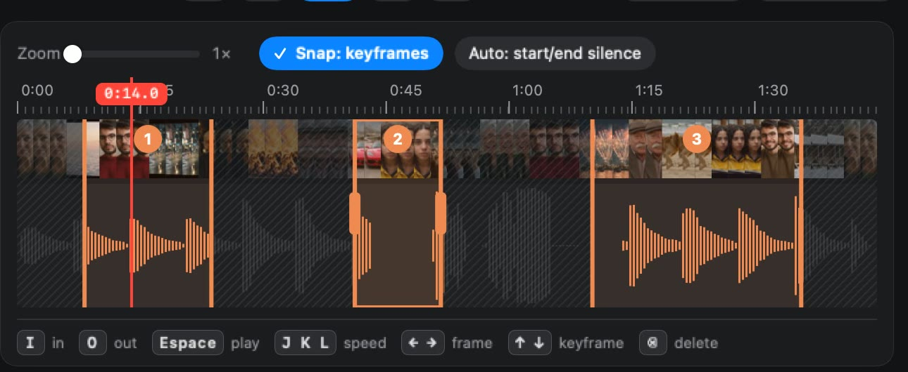
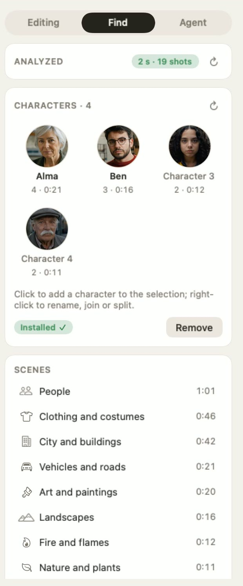

La timeline : vignettes, forme d'onde, morceaux en orange.

The timeline: thumbnails, waveform, orange pieces.
Français
Placez la tête de lecture, puis I pour l'entrée et O pour la sortie : le morceau existe. Glissez les poignées pour ajuster. ⌫ supprime le morceau, ⌘Z annule.
La tête de lecture suit la souris image par image. ←→ avancent d'une image, ↑↓ d'une image clé.
English
Place the playhead, then I for the in point and O for the out point: the piece exists. Drag the handles to adjust. ⌫ deletes the piece, ⌘Z undoes.
The playhead follows the mouse frame by frame. ←→ step one frame, ↑↓ one keyframe.
Auto : silences début / fin pose d'un clic un morceau sans le silence du début et de la fin.
Auto: start/end silence places, in one click, a piece without the opening and closing silence.
Un par morceau crée nom_01, nom_02… sans jamais rien écraser. Fusionner met les morceaux bout à bout dans un seul fichier.
Sans recompression : instantané et sans perte, mais une vidéo ne démarre que sur une image clé (l'interface vous le dit). Recompresser coupe à l'image près.
English
One per piece creates name_01, name_02… and never overwrites anything. Merge puts the pieces end to end in a single file.
Direct copy: instant and lossless, but a video only starts on a keyframe (the interface tells you). Re-encode cuts frame-exact.
Sortie
Formats
Vidéo
Identique à l'original, MP4, MOV, MKV, WebM
Audio
MP3, M4A, WAV, FLAC, AIFF, Opus
Output
Formats
Video
Same as source, MP4, MOV, MKV, WebM
Audio
MP3, M4A, WAV, FLAC, AIFF, Opus
Plusieurs fichiers d'un coup
Several files at once
Dans le Finder, clic droit ▸ « Élaguer début et fin avec mSLICE… » : retirez X secondes au début et Y à la fin de chaque fichier, ou laissez mSLICE retirer les silences. Les originaux ne sont jamais modifiés.
In the Finder, right-click ▸ “Trim start and end with mSLICE…”: remove X seconds at the start and Y at the end of each file, or let mSLICE remove the silences. Originals are never modified.
DESKTOP MAC TOOLKIT · v1.36
2
Trouver · Find
Trouver
Find
Repérer les plans, les scènes et les sons d'un fichier avec les outils de macOS, puis transformer les passages trouvés en morceaux.
Spot a file's shots, scenes and sounds with macOS tools, then turn the passages found into pieces.
Ouvrez l'onglet Trouver et cliquez sur Analyser : environ une seconde par minute de vidéo. Vous pouvez continuer à travailler. Le résultat est gardé pour la prochaine ouverture.
mSLICE repère les plans, une quarantaine de scènes (feu, foule, nuit, véhicules…) et de sons (parole, musique, rires…). Rien ne sort du Mac.
English
Open the Find tab and click Analyze: about one second per minute of video. You can keep working. The result is kept for the next time.
mSLICE spots the shots, about forty scenes (fire, crowd, night, vehicles…) and sounds (speech, music, laughter…). Nothing leaves your Mac.
« Explosion » n'existe pas comme scène : essayez le son « Explosions » ou la scène « Feu et flammes ».
“Explosion” does not exist as a scene: try the “Explosions” sound or the “Fire and flames” scene.
Carte « Personnages » ▸ « Télécharger » (≈ 60 Mo), seulement si vous le voulez.
2 · Reconnaître
« Reconnaître les personnages » : environ 1 s par minute de vidéo.
3 · Utiliser
Un clic sur une vignette l'ajoute à la sélection, comme une scène.
4 · Corriger
Clic droit : renommer, réunir deux vignettes de la même personne, séparer un groupe mélangé.

1 · Download
“Characters” card ▸ “Download” (≈ 60 MB), only if you want it.
2 · Recognise
“Recognise the characters”: about 1 s per minute of video.
3 · Use
A click on a thumbnail adds it to the selection, like a scene.
4 · Fix
Right-click: rename, join two thumbnails of the same person, split a mixed group.
Limites : visages seulement (ni créatures ni costumes). Les visages de profil, petits ou flous peuvent être mal regroupés : c'est pour cela que « Réunir » et « Séparer » existent.
Limits: faces only (no creatures or costumes). Profile, small or blurry faces may be grouped wrongly: that is why “Join” and “Split” exist.
L'agent est désactivé par défaut : Réglages ▸ Agent ▸ « Autoriser un agent ». Il crée seulement de nouveaux fichiers : il ne supprime et n'écrase rien.
Panneau de discussion (onglet Agent) : Claude Code, API Anthropic, ou serveur compatible OpenAI (Ollama, LM Studio…).
English
The agent is off by default: Settings ▸ Agent ▸ “Allow an agent”. It only creates new files: it deletes and overwrites nothing.
Chat panel (Agent tab): Claude Code, Anthropic API, or an OpenAI-compatible server (Ollama, LM Studio…).
Raccorder un autre agent (MCP)
Connect another agent (MCP)
Réglages ▸ Agent ▸ « Raccorder d'autres agents » : trois boutons copient la configuration. Pour Claude Code :
Settings ▸ Agent ▸ “Connect other agents”: three buttons copy the setup. For Claude Code:
claude mcp add --scope user mslice -- "/Applications/mSLICE.app/Contents/MacOS/mslice-mcp"
claude mcp add --scope user mslice -- "/Applications/mSLICE.app/Contents/MacOS/mslice-mcp"
mSLICE est publié sous licence MIT et fait partie du DESKTOP MAC TOOLKIT. Le code est sur github.com/starbudweiser/mSLICE.
L'appli embarque FFmpeg (LGPL), LAME, mpg123, Opus et libvpx. Le modèle optionnel des personnages est AuraFace de fal.ai (Apache 2.0). Le détail est dans THIRD_PARTY_LICENSES.md.
English
mSLICE is published under the MIT licence and is part of the DESKTOP MAC TOOLKIT. The code is at github.com/starbudweiser/mSLICE.
The app bundles FFmpeg (LGPL), LAME, mpg123, Opus and libvpx. The optional characters model is fal.ai's AuraFace (Apache 2.0). Details are in THIRD_PARTY_LICENSES.md.
♥ Soutenir le projet : facultatif, aucune fonction bloquée. Lien en bas de la fenêtre « À propos » : github.com/sponsors/starbudweiser.
♥ Support the project: optional, no feature locked. Link at the bottom of the “About” window: github.com/sponsors/starbudweiser.